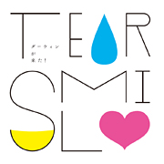

進化したギター・ロック ! 僕らが奏でる明日へのヒカリ
1st Mini Album [ダーウィンが来た！] 2011.8.10 ON SALE!

鳴り響くエッジの効いたギターと、カタく攻撃的なドラムが作り出すソリッドなダンス感、そこに変声期の少年を思わせるフワフワとした特徴的な声のボーカルが作り出す独特な浮遊感が融合。
日常に埋もれて見えなくなっている、明日を照らす希望のヒカリがいっぱいに詰まったマスターピース。
前世代をさらにハイブリッド化した、2010年代ギター･ロックの新定義。
<収録曲>
1.「さぁ」 試聴
2.「シンカロン」 試聴
3.「TTK2」 試聴
4.「ぷくぷく」 試聴
5.「植木鉢」 試聴
6.「TTK3」 試聴
7.「アステラス」 試聴
※試聴/視聴には、最新の Windows Media Player が必要です。
DLCR-11081 定価:¥1,466(税込)
日常に埋もれて見えなくなっている、明日を照らす希望のヒカリがいっぱいに詰まったマスターピース。
前世代をさらにハイブリッド化した、2010年代ギター･ロックの新定義。
<収録曲>
1.「さぁ」 試聴
2.「シンカロン」 試聴
3.「TTK2」 試聴
4.「ぷくぷく」 試聴
5.「植木鉢」 試聴
6.「TTK3」 試聴
7.「アステラス」 試聴
※試聴/視聴には、最新の Windows Media Player が必要です。
DLCR-11081 定価:¥1,466(税込)